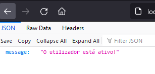

Como registar
- Abrir a janela de registar.
- Inserir um user e uma senha (tamanho minimo 4 letras).
- Depois de registado, o seguinte deve aparecer no popup:
- E o seguinte deve aparecer na consola do visual studio (se inserir um utilizador e não for um email, ira aparecer uma mensagem de erro no visual studio, mas é s a avisar que o que foi inserido não é um email):
- Depois disto, o utilizador fica registado na base de dados.
Como autenticar
- Antes de conseguir fazer login, é necessario autenticar o utilizador criado no passo anterior.
- Abrir o ficheiro "users.db" que se encontra na diretoria root do trabalho.
- Localizar o utilizador que foi acabado de criar, e copiar o "confirmation token" (sem as aspas):
- Depois de ter copiado o token, deve abrir o site localhost:42080/api/auth/confirm/ e inserir no final do link o token que foi copiado. Deve ficar parecido com isto:
- Depois de inserir o site com o token, deve clicar enter, e o seguinte deve aparecer no site em caso de sucesso:

- Após isto, o utilizador encontra-se registado no site.
Como fazer login
- Depois de seguir o registar e o autenticar, pode clicar no botao de login e entrar com o utilizador criado.
- Depois de fazer o login, a informação deve aparecer no site.
- Cada vez que der refresh no site, tem de fazer login outra vez.